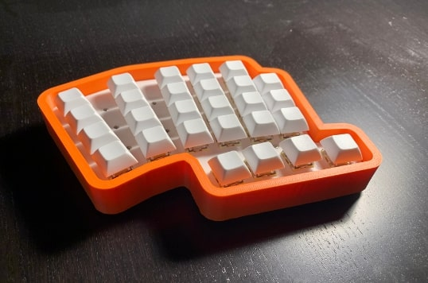
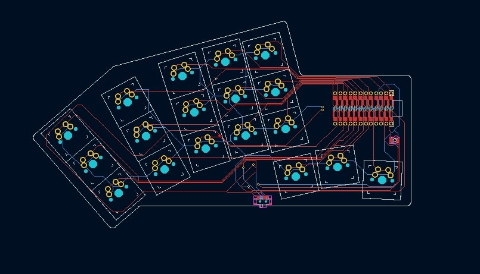

Projects
MTG Deck Completion
MTG Deck Completion is an end-to-end recommender that completes 100-card Magic: The Gathering Commander decks from a partial decklist. To train it, I collected and publicly released a dataset of 189K real decklists. I built a resumable, rate-limited data pipeline on the Moxfield API that samples decks across 2,400 commanders in popularity tiers, so less popular commanders are still well represented.
Each of the 32K cards is tokenized by combining a learned ID, structured card features, and a sentence-transformer embedding of its rules text. I trained DeepSets and Set Transformer models on masked set prediction and ensembled them with a deck-pruning model. Rebalancing the training data raised long-tail MRR on unseen commanders by 7×.
The app has a FastAPI backend and a React/TypeScript frontend, deployed to Hugging Face Spaces, and GitHub Actions tests each model release before it is deployed. You can try the live demo or check out the code here.
Causal Tracing for Transformer Interpretability
In this project, I reproduced the core experiments of the NeurIPS 2022 paper Locating and Editing Factual Associations in GPT (ROME) in PyTorch. Using causal tracing, I located where GPT-2 Small, Medium, Large, and XL store factual associations: I corrupted the model's inputs, then restored individual hidden states to see which ones recover the correct prediction.
Models to Predict Student Accuracy
I compared K-Nearest Neighbors, Item-Response Theory, and autoencoder models for predicting whether a student would answer a question correctly, using PyTorch and scikit-learn. By combining the models in an ensemble and tuning them with cross-validation, I reached 70% validation accuracy.
Patient Portal Backend
In May of 2024, a family member reached out in need of a backend for a dental patient-management system. The frontend was already implemented, so I was tasked with implementing the endpoints that the frontend used. I built the API with the Django REST Framework and PostgreSQL, and designed it with HIPAA privacy requirements in mind: users authenticate with JWTs, and sensitive patient records are encrypted.
TTC Tracker
During the fall of 2023, I worked on a project with three colleagues to build a web application that would allow users to view Toronto Transit Commission (TTC) stops, routes, and vehicles in real time, as well as calculate and offer arrival time predictions. We built a frontend using React.js and used the Google Maps API to display a live map of Toronto. We also built a backend using the Java Spring Boot framework, designed around SOLID principles, which ingests and processes the TTC's GTFS real-time data feeds. In order to reduce latency, we decided to cache location data (such as stop locations, which are very unlikely to change) into csv files. In case our arrival time predictions fail, the backend defaults to TTC scheduled arrival times. You can check out our project here.
Other Projects
Niniboard V1
In July of 2023, I began working on designing a new one-handed keyboard from scratch. I had already built the Niniergo Split keyboard (see below), but rather than routing a custom PCB to wire the keyboard, I decided to create a model for a case in Fusion360, a CAD software, and 3d print the case. Afterwards, I handwired the entire keyboard, eliminating the need for a PCB. I wrote the firmware for the keyboard using ZMK.

Finished Niniboard V1.
Guess Who? Decision Tree Bots
During early 2023, I teamed up with a friend to build a bot that was capable of consistently winning games of the popular children's game Guess Who?. Our approach was to build a strategically optimal decision tree where the bot would be given a list of various character attributes that it could ask its opponent about. We decided to build five different decision trees using the following decision tree algorithms: ID3, CART, C4.5, Chi-Square Automatic Interaction Detection, and Reduction in Variation. We then built a UI where a human could play against any decision tree generated.
Since we built multiple decision trees using different algorithms, we were also able to compare the performance of each decision tree algorithm. We decided to modify our UI to allow a human to have each algorithm run multiple simulations, and present the results of those simulations as well as various statistics in a bar graph. You can find our project here.
Niniergo Split
During the summer of 2022, I decided to design a custom ergonomic keyboard molded specifically for my hand, which I called the "Niniergo Split." I used Ergogen, a utility that allows you to generate a custom keyboard layout, in order to produce a rough sketch of a pcb. I decided to generate a 36-key split-board layout, and designed a pcb using KiCAD. For the microcontroller, I chose to use a nice!nano chip, which would allow the keyboard to be bluetooth, and wrote the firmware using ZMK.

Gerber File for Niniergo Split.